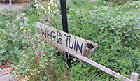
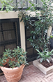
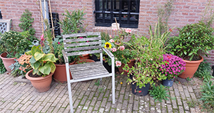
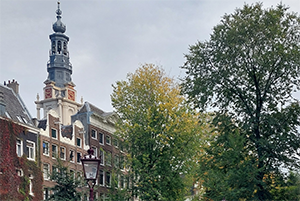

Wij houden van groen! Natuur hoort hier thuis!
Wij houden van groen! Natuur hoort hier thuis!
De weg en de tuin
 Door groene routes in de stad te creeëren moet het voor bewoners mogelijk zijn om altijd lopend of op de fiets een park te bereiken.
Potten en bakken
Bewoners die zelf hun buurt willen vergroenen zijn hier toe in staat. Met het aanleggen van geveltuinen of gebruik maken van groene stroken in de stad.
Groen is altijd in de buurt
vergroening is aan de horizon.